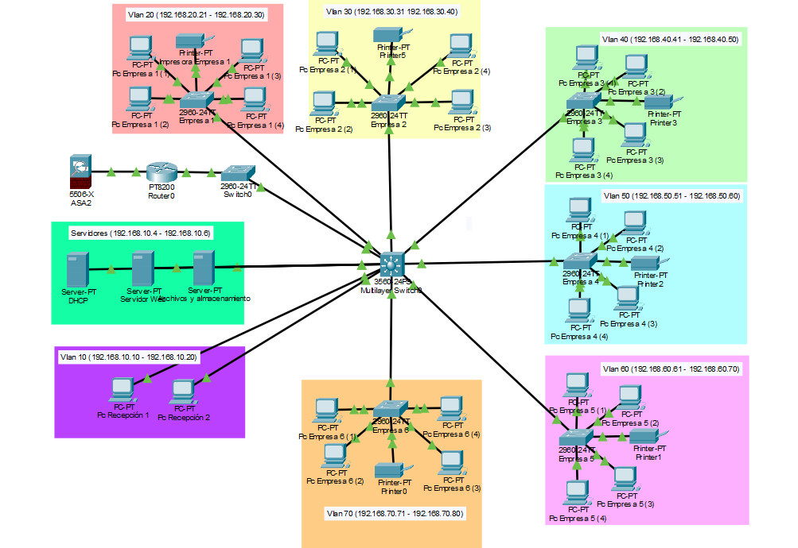

Infraestructura de red
Descripción de la infraestructura de red del vivero.

Creemos que emprender no debería ser un camino en solitario. Por eso reunimos talento, experiencia y recursos bajo un mismo techo.
Aquí encontrarás las conexiones y herramientas que tu proyecto necesita para avanzar con foco, confianza y propósito.
Secciones de la página
Descripción de la infraestructura de red del vivero.

Descripción de los equipos y el almacenamiento disponibles.
DescargarDescripción de los servicios de red que se ofrecen.
DescargarDescripción de las incidencias detectadas durante la instalación.
DescargarDescripción del despliegue de servicios en AWS.
Descargar